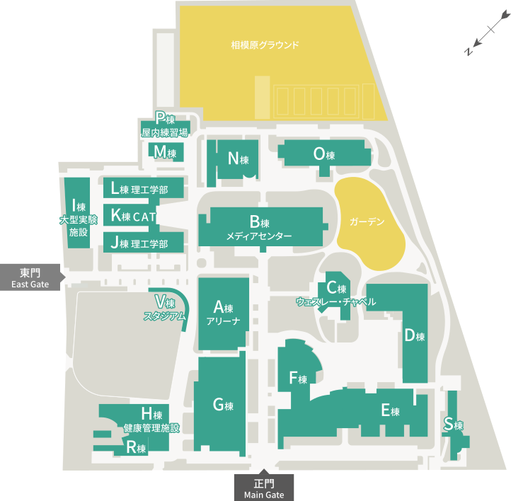

冷水器マップ

A棟（アリーナ）
※調査中
B棟（メディアセンター）
お水だけ汲みたいのならば図書館内ではなく、エスカレーターで登って右にある3階の ウォーターサーバーをおすすめします。しかし、お水欲しさにわざわざB棟3階に行くくらいなら、 1階にある食堂やF棟ラウンジのほうが絶対にラクでしょう。授業の合間に使うなら意外と便利です。
- 1階：なし
- 2階：ウォーターサーバー、冷水機（どちらも図書館内）
- 3階：ウォーターサーバー（図書館外）、冷水機（図書館内）
- 4階：冷水機（情報メディアセンター前、印刷機横）
C棟（ウェスレー・チャペル）
※調査中
D棟
※調査中
E棟
※調査中
F棟
ラウンジではないほう（正門側）のF棟にはどの階にも冷水機がありますが、水を汲むには心もとないです。 お水を汲みたい場合はラウンジのウォーターサーバーが便利です。 お昼休みなど、人が多い時間帯はラウンジのウォーターサーバーに列ができていることもあります。
- 1階：冷水機、ウォーターサーバー（F棟ラウンジ内）
- 2階：冷水機
- 3階：冷水機
- 4階：冷水機
G棟（食堂）
※調査中
H棟（健康管理施設）
※調査中
I棟（大型実験施設）
※調査中
J棟（理工学部）
※調査中
K棟（CAT）
※調査中
L棟（理工学部）
※調査中
M棟
※調査中
N棟
※調査中
O棟
※調査中
P棟（屋内練習場）
※調査中
R棟
※調査中
S棟
※調査中